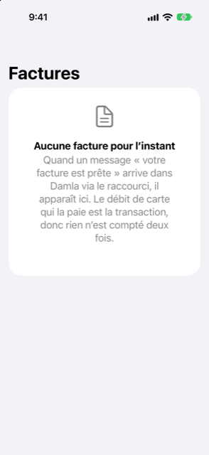

Guide › Planification
Factures à venir
Comment une facture annoncée par un message est mémorisée puis réglée par le débit de la carte.
Factures à venir est l’endroit où Damla garde une facture à partir du moment où un message l’annonce (« votre facture est prête ») jusqu’à l’arrivée du débit qui la paie. L’annonce elle-même n’est pas une dépense : aucun argent n’a bougé. Le débit de carte ou de banque qui paie la facture est la seule vraie transaction, et c’est lui qui règle la facture ici, si bien que rien n’est compté deux fois.

Quand l’utiliser
- Un fournisseur d’énergie ou autre envoie un message « votre facture est prête » et vous voulez qu’elle soit mémorisée sans l’enregistrer comme une dépense.
- Vous voulez voir tout ce qui est annoncé mais pas encore débité, avec les montants et les dates d’échéance.
- Une facture a été notée par erreur et vous voulez la retirer.
Pas à pas
- Laissez l’avis de facture parvenir à Damla via votre automatisation Shortcut (ou collez le message dans Ajouter par une phrase).
- Ouvrez l’onglet Plan et touchez Factures à venir. Le titre de la page est Factures ; Aujourd’hui affiche un avis avec les mots factures à venir qui ouvre cette même liste.
- Touchez une facture pour voir ses détails : le montant, la date d’échéance, le compte client auquel elle correspond, la ventilation et, une fois connu, la carte ou le compte qui paie habituellement ce fournisseur.
- Quand le débit arrive (une alerte de carte ou une ligne de relevé), Damla le fait correspondre à la facture et la facture descend vers Payé. Vous n’avez rien à faire.
- Vérifiez la transaction réglée dans Activité : quand la facture avait une ventilation, le débit du fournisseur porte désormais les catégories de la facture.
Comment la facture se règle
- Le débit apparié est l’unique transaction de la facture. Si la ventilation de la facture correspond exactement à son total, ce débit est réparti entre les catégories selon les lignes de la ventilation. Électricité, eau, climatisation, gaz, internet, téléphone et égouts vont dans Factures et services (ou Services si vous n’avez pas cette catégorie). Le logement va dans Logement (ou Loyer, ou Factures et services). Une ligne à laquelle aucune de ces catégories ne correspond garde la catégorie sous laquelle le débit a été classé.
- La facture est ensuite marquée payée, et Damla retient quelle carte paie ce fournisseur.
- Les rappels de la même facture (« à échéance », « en retard ») ne font que rafraîchir la date d’échéance de la facture ; ils n’en ajoutent jamais une seconde.
- Une fois que Damla sait quelle carte paie un fournisseur, une facture ouverte de ce fournisseur est déjà dans votre prévision : pour une carte, l’argent quitte le compte qui paie cette carte à la date d’échéance de la carte, pas quand l’avis est arrivé.
Où le voir
- Aujourd’hui : l’avis avec les mots factures à venir ouvre cette page.
- Plan, Factures à venir : les mêmes factures, chacune avec sa ventilation et ce qui a été payé. Quand les factures ouvertes sont toutes dans une même devise, une carte en haut les totalise.
- Réglages, Alertes récentes : chaque avis et chaque rappel, avec la raison pour laquelle il a été noté.
- La prévision (depuis Aujourd’hui, Votre solde à venir) montre la facture comme un paiement quand le compte payeur est connu.
La forme d’une facture
Les factures et les montants que vous voyez sont les vôtres, donc aucun chiffre détaillé n’est donné ici. La forme est la suivante : un avis arrive avec un total et une ventilation facultative ; la facture attend sous À venir ; un débit la paie ; le débit est réparti entre les catégories de la ventilation ; la facture passe à Payé.
Bon à savoir
- Tant qu’elle n’est pas débitée, une facture n’est pas une transaction : les rapports de dépenses ne la comptent pas.
- Si vous annulez l’alerte qui a ajouté un débit réglé (dans Réglages, Alertes récentes), la transaction est supprimée et la facture est de nouveau due.
- Si la facture se répète, configurez-la plutôt dans Revenus et factures : tout ce qui s’y répète tous les 3 mois ou moins souvent est compté dans la Mise de côté, qui calcule ce qu’il faut mettre de côté chaque mois.
À voir aussi
- Revenus et factures qui se répètent
- Fonctionnement de la capture automatique
- Ce que Damla ignore, et annuler une alerte
- Cartes de crédit
Quelque chose n’est pas clair ou manque ? Écrivez à support@raveniq.ai en indiquant la page.